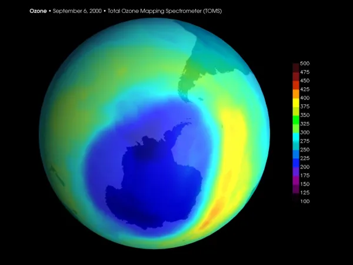

Antes de abordar la problemática de la capa de ozono, vamos a establecer una comparación sencilla para entender mejor a que hace referencia la destrucción de la capa de ozono.
Imaginemos que la capa de ozono es un cuenco de madera y la radiación solar, agua. Ahora colocamos el cuenco hacia abajo y bajo éste, una esponja. El cuenco tiene la función de proteger la esponja del agua que echamos por encima, evitando así que se moje. Pero ¿qué ocurriría si perforamos el cuenco? La respuesta es sencilla, la protección de éste ya no es completa y la esponja empezaría a mojarse. ¿Y si ahora aumentamos el orificio? Pues bien, la cantidad de agua que mojase la esponja sería mayor, aumentando la superficie afectada por el agua. El cuenco ya no protegería la totalidad de la superficie. Algo similar ocurre con la capa de ozono, la Tierra y la radiación solar.
Qué es la capa de ozono:
De forma clara, una definición de la capa de ozono es que esta es la capa protectora situada en la estratosfera, que actúa de filtro para la radiación solar y de escudo para la radiación ultravioleta (UV), garantizando de esta manera la vida en la Tierra.
A pesar de su gran importancia, los humanos parecemos empeñados en seguir destruyéndola al acelerar su deterioro a través de la contaminación ambiental que es, una buena parte de ella, culpa nuestra. En este otro post de EcologíaVerde puedes aprender mucho más sobre esta parte de la estratosfera, así como Por qué es tan importante la capa de ozono.
Cómo cuidar la capa de ozono y evitar su destrucción
Para terminar, queremos ofrecerte algunos consejos sobre cómo cuidar la capa de ozono para que no se destruya, frenando el progreso del agujero en esta y ayudando a recuperar el ozono.
-Evitar el uso de aerosoles que contengan CFC.
-Evitar productos que contengan halones, como algunos extintores.
-Evitar el uso de fertilizantes que contengan bromuro de metilo, hay alternativas que no inciden negativamente y que podemos utilizar para el cultivo.
-Comprar productos locales. ¿Por qué? Pues la razón, en este caso, está en los gases que emiten los vehículos que transportan los productos, estos gases son los óxidos de nitrógeno, perjudiciales para la capa de ozono. Si los productos son locales, la distancia que tienen que recorrer es menor o nula y eso se traduce en la mínima o inexistente emisión de éstos.
-Moverse con otras alternativas que no sea coche particular (transporte público, bicicletas, patinetes...), para evitar la emisión masiva de los gases anteriormente mencionados.
-Uso de bombillas de menor consumo, como los LED. Aprende más sobre la Iluminación ecológica LED aquí.
Estas son algunas de las acciones que podemos evitar y otras promover, pero sobre todo divulgar. Empezando por los más pequeños, que son nuestro futuro pero, sobre todo, en sus manos está su propio futuro.
En este vídeo podrás aprender más sobre cómo evitar el deterioro o la destrucción de la capa de ozono.